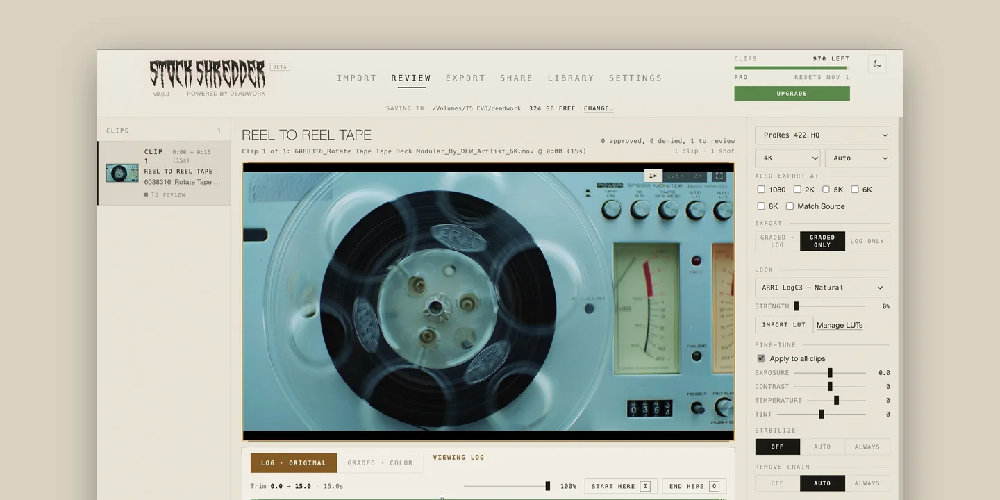

Stock Shredder · For drone footage
How to Turn Drone Footage Into Stock Clips Faster
A card full of flights is mostly takeoff, landing and repositioning. Here's how to get the good seconds out fast.

The short version
- Cut each flight into single moves, 10 to 20 seconds each.
- Drop takeoff, landing, yaw corrections and props in frame.
- Grade D-Log or D-Log M to a clean Rec 709.
- Strip the audio. Prop noise never sells.
- Fly legally. In the US that means Part 107.
Stock Shredder finds the usable moves in every flight, grades them with a DJI Look and exports each one as its own clip.
One flight, five good clips, twenty minutes of scrubbing.
A 10-minute flight might hold five sellable moves. The rest is climbing out, lining up the shot and flying home.
Finding those five means scrubbing every file, then trimming, grading and exporting each move on its own. A weekend of flying turns into a week of editing, so the cards go in a drawer.
The flying is the fun part. The prep is what keeps aerial footage off stock sites.
What stock sites want from aerial footage.
- One move per clip. A clean reveal, orbit, push in or top-down. No cuts inside a clip.
- Steady starts and ends. No yaw correction or gimbal tilt in the first and last second.
- No props or landing gear in frame. Common on FPV and on fast forward flight.
- No logos or readable signs. Rooftop branding and billboards can sink a commercial clip.
- A clean grade. Light Rec 709 from D-Log or D-Log M, not a heavy look.
- Native frame rate. If you shot 48 fps, note that Adobe Stock won't take it.
Length, frame rate and file rules for each site are in How to Prepare Footage for Adobe Stock, Pond5 and Shutterstock. US flight rules: FAA Part 107. Checked November 2026.
Long flights hold many short moments. Automatic clipping vs scene detection explains how they get cut into stock clips, and our free title and keyword checker helps with the words for each one. Planning a flight just for stock? Pack with our camera gear checklist for filmmakers so nothing stays behind.
The by-hand way.
- Scrub every flight for the usable moves.
- Trim each move, cutting the correction at the start and end.
- Grade D-Log to Rec 709 with DJI's LUT and a touch of contrast.
- Check for props in frame, logos and frame rate.
- Export each move as its own file, audio off.
- Name and keyword it: place, move, time of day.
Our average is about 2 minutes per finished clip, and drone footage needs more scrubbing than most.
The Stock Shredder way.
Point Stock Shredder at the card dump on your Mac or Windows computer. It works through every flight while you do something else.

- It finds the moves. Usable moments are found and trimmed inside the length you set.
- It sets aside the bad ones. Broken, empty and too-shaky clips go to one side.
- It grades. A built-in DJI Look, or load DJI's own LUT for your log profile. Fine-tune exposure and contrast on one clip or all.
- It checks. Logos, HDR, wrong frame rates and footage under 2K are flagged before you upload.
- It exports. Each clip its own ProRes file. Several sizes in the same pass.
- It names and keywords. A clear name, a folder per clip, and keywords ready to paste.

The time difference, measured.
Our benchmark is real Sony FX6 and FX3 footage on a MacBook Pro M3 Pro, exported to an external SSD as graded ProRes 422 HQ 4K.
100 clips
500 clips
1,000 clips
Stock Shredder time is shred plus export. Review time not included. By hand: 2 minutes per clip average.
What to know before you start.
Stock Shredder handles the repetitive parts. A few things stay with you.
- You review. It finds the usable moves. Your eye picks the shots that sell.
- You fly legally. Permits and releases stay with you, and a clean record makes every clip safe to sell.
- You upload. Names and keywords are ready to paste into each site.
- It exports ProRes. Every site takes it, so one export covers them all.
When by hand still makes sense.
- One hero flight you want to edit shot by shot.
- Speed ramps or hyperlapses built from several clips.
For a drawer full of cards, every flight needs the same steps. That's the part worth handing off.
FAQ
Can I sell DJI drone footage on Adobe Stock, Pond5 and Shutterstock?
Yes. All three take aerial footage. Clips need to be 5 to 60 seconds, graded if you shot log, and free of visible logos and recognizable people without a release.
Do I need a license to sell drone footage in the US?
Selling footage is commercial flying, so in the US you need an FAA Part 107 certificate for the flight. Check your own country's rules if you fly elsewhere.
Should I grade D-Log or D-Log M footage before uploading?
Yes. Stock sites want a clean Rec 709 grade, not flat log. A light grade is best, because buyers grade it again.
How long should drone stock clips be?
10 to 20 seconds is the sweet spot. One smooth move per clip, with a second of clean handle at each end.
Does Stock Shredder work with DJI files?
Yes. Standard DJI MP4 and MOV files work, and CinemaDNG from DJI cameras works on macOS. It has a built-in DJI Look, or you can load your own LUT.